Compre na Amazon, Submarino ou UmLivro
Veja também os cursos de extensão a distância Engenharia de Software Moderna (48 horas) e Teste de Software (20 horas), oferecidos pelo DCC/ICEX/UFMG.
Engenharia de Software Moderna
4 Modelos
All models are wrong, but some models are useful. So the question you need to ask is not
Is the model true?(it never is) butIs the model good enough for this particular application?– George Box
Este capítulo inicia com uma apresentação genérica sobre modelos de software (Seção 4.1). Em seguida, apresentamos uma visão geral sobre UML, que é a notação gráfica mais utilizada para construção de modelos de software (Seção 4.2). Também deixamos claro que vamos estudar UML visando a criação de esboços de software (sketches) e não desenhos técnicos detalhados (blueprints). Nas seções seguintes, apresentamos quatro diagramas UML com um maior nível de detalhes: Diagramas de Classes (Seção 4.3), Diagramas de Pacotes (Seção 4.4), Diagramas de Sequência (Seção 4.5) e Diagramas de Atividades (Seção 4.6).
4.1 Modelos de Software
Como vimos no capítulo anterior, requisitos documentam o que
um sistema deve fazer, valendo-se de um nível de abstração próximo do
problema e de seus usuários. Por outro lado, o código fonte é uma
representação concreta, de baixo nível e executável do comportamento de
um sistema. Portanto, existe uma lacuna entre esses dois mundos:
requisitos e código fonte. Para preencher essa lacuna, desde a fundação
da área, Engenheiros de Software investem na criação de
modelos, os quais são criados para ajudar no
entendimento e análise de um sistema. Para cumprir essa missão, os
modelos usados em Engenharia de Software são mais detalhados do que
requisitos, mas ainda menos complexos do que o código fonte de um
sistema.
Modelos são largamente usados também em outras engenharias. Por exemplo, uma engenheira civil pode decidir criar uma maquete para mostrar como será a ponte que ela foi contratada para construir. Em seguida, ela pode criar um modelo matemático e físico da ponte e usá-lo para simular e provar propriedades da mesma, tais como carga máxima, resistência a ventos, ondas, terremotos, etc.
Infelizmente, modelos de software — pelo menos até hoje — são menos efetivos do que os modelos matemáticos usados em outras engenharias. O motivo é que ao abstrair detalhes eles também descartam parte da complexidade que é essencial aos sistemas modelados. Frederick Brooks comenta sobre essa questão em seu ensaio clássico Não Existe Bala de Prata (link):
A complexidade de um software é uma propriedade essencial e não acidental. Portanto, representações de uma entidade de software que abstraem sua complexidade normalmente também abstraem sua essência. Por três séculos, matemáticos e físicos obtiveram grandes avanços construindo modelos simplificados de um fenômeno complexo, derivando propriedades de tais modelos e verificando tais propriedade por meio de experimentos. Esse paradigma funcionou porque as complexidades ignoradas não são propriedades essenciais do fenômeno sob estudo. Porém, essa abordagem não funciona quando as complexidades são essenciais.
A frase que abre esse capítulo, do estatístico britânico George Box,
também remete a uma reflexão sobre o uso prático de modelos. Apesar de a
frase se referir a modelos matemáticos, ela se aplica a outros modelos,
inclusive modelos de software. Segundo Box, todos os modelos são
errados
, pois são simplificações ou aproximações da realidade.
Por isso, a questão principal consiste em avaliar se, apesar dessas
simplificações, um modelo continua sendo uma abstração útil para o
estudo de alguma propriedade do objeto ou fenômeno que ele modela.
Nesta introdução, estamos procurando calibrar as expectativas associadas ao estudo de modelos de software. Por um lado, como afirmamos, eles não têm a mesma efetividade de modelos em outras Engenharias. Além disso, via de regra, modelos de software não são formalismos matemáticos, mas sim representações gráficas de determinadas dimensões de um sistema de software. Por outro lado, isso não significa dizer que modelos de software são inúteis, a ponto de não merecer um capítulo em um livro sobre práticas de Engenharia de Software Moderna. Se não criarmos expectativas irrealistas, eles podem ter um papel importante no desenvolvimento de sistemas de software, tal como veremos na próxima seção.
Se pensarmos em termos de atividades de desenvolvimento de software, a criação de modelos é considerada uma atividade de projeto (design). Durante o levantamento de requisitos, as atenções estão voltadas para a definição do problema que será resolvido pelo sistema. Quando se avança para atividades de projeto, o problema já deve estar devidamente entendido e as atenções se voltam para a concepção de uma solução capaz de resolvê-lo. Após essa solução ser projetada, ela deve ser implementada, usando-se linguagens de programação, bibliotecas, frameworks, bancos de dados, etc.
Especificamente, neste capítulo, iremos estudar um subconjunto dos diagramas propostos pela UML (Unified Modelling Language). Vamos começar descrevendo a história e o contexto que levou à criação da UML. Em seguida, vamos estudar alguns dos principais diagramas UML com mais detalhes.
Aprofundamento: Desde a década de 70, pesquisadores têm investigado o uso de modelos matemáticos em Engenharia de Software, por meio do que se chama de Métodos Formais. Esses métodos valem-se de uma notação matemática — baseada em lógica, teoria de conjuntos ou Redes de Petri, por exemplo — para derivar especificações formais para sistemas de software. Além de serem precisas e não-ambíguas, especificações formais podem ser usadas para provar propriedades de um sistema mesmo antes de sua implementação. Por exemplo, em tese, poderia-se provar que um sistema concorrente não possui deadlocks ou condições de corrida. Pode parecer ambicioso, mas isso ocorre em outras Engenharias. Retomando o exemplo do início da seção, engenheiros civis usam há séculos modelos matemáticos para provar, por exemplo, que uma ponte — antes de ser construída — vai suportar determinada carga e certas condições climáticas. No entanto, o uso de formalismos e especificações matemáticas em Engenharia de Software não avançou como em outras Engenharias. Por isso, eles são pouco usados atualmente, com exceção talvez de alguns sistemas de missão crítica.
4.2 UML
UML é uma notação gráfica para modelagem de software. A linguagem define um conjunto de diagramas para documentar e ajudar no design de sistemas de software, particularmente sistemas orientados a objetos. As origens de UML datam da década de 80, quando o paradigma de orientação a objetos estava amadurecendo e vivendo seu auge. Assim, surgiram diversas linguagens orientadas a objetos, como C++, e também algumas notações gráficas para modelagem de software. Lembre-se que os sistemas na década de 80 eram desenvolvidos segundo o Modelo Waterfall, que prescreve uma grande e longa fase de design. A proposta de UML era que nessa fase seriam criados modelos gráficos, que depois seriam repassados para os programadores, para serem convertidos em código fonte.
Na verdade, UML é o resultado de um esforço para unificar as notações gráficas que surgiram no final das décadas de 80 e início da década de 90. Especificamente, a primeira versão de UML foi proposta em 1995, como resultado da unificação de notações que estavam sendo desenvolvidas de forma independente por três Engenheiros de Software conhecidos na época: Grady Booch, Jim Rumbaugh e Ivar Jacobson. Nessa época, surgiram também ferramentas para desenhar diagramas UML, as quais foram chamadas de ferramentas CASE (Computer-Aided Software Engineering). O nome é inspirado em ferramentas CAD (Computer Aided Design), usadas para criar modelos para produtos de Engenharia tradicional, como casas, pontes, automóveis, aviões, etc. Por isso, era importante ter uma padronização de UML, de forma que um diagrama criado em uma ferramenta CASE pudesse ser aberto e editado em uma outra ferramenta, de uma empresa diferente. De fato, em 1997, UML passou a ser um padrão gerenciado pela OMG, que é uma organização de padronização financiada por indústrias de software. Desde o início, o desenvolvimento de UML foi comandado por consultores influentes e por grandes empresas de ferramentas ou consultoria, como a Rational, que depois viria a ser comprada pela IBM.
Como usar UML?
Martin Fowler, em seu livro sobre UML (link), propõe uma classificação sobre formas de uso dessa linguagem de modelagem. Segundo ele, existem três formas de uso de UML: como blueprint, como linguagem de programação ou como esboço. Vamos descrever cada uma delas nos próximos parágrafos.
UML como blueprint corresponde ao uso de UML vislumbrado por seus criadores, ainda na década de 90. Nessa forma de uso, defende-se que, após o levantamento de requisitos, seja produzido um conjunto de modelos — ou plantas técnicas (blueprints) — documentando diversos aspectos de um sistema e sempre usando diagramas UML. Esses modelos seriam criados por analistas de sistemas, usando-se ferramentas CASE e, depois, repassados a programadores para codificação. Logo, UML como blueprint é recomendado quando se emprega processos de desenvolvimento do tipo Waterfall ou quando se adota o Processo Unificado (UP). Na verdade, UP foi proposto por pessoas com forte ligação com UML. No entanto, como já discutimos no Capítulo 2, o uso de UML na construção de modelos detalhados e completos é cada vez mais raro. Por exemplo, com métodos ágeis não existe uma longa fase inicial de design (big design up front). Em vez disso, decisões de design são tomadas e refinadas ao longo do desenvolvimento, em cada uma das iterações (ou sprints). Por isso, não iremos neste capítulo nos aprofundar no uso de UML como blueprint.
UML como linguagem de programação corresponde ao
uso de UML vislumbrado pela OMG, após a padronização da linguagem de
modelagem. De forma ambiciosa e pelo menos durante um período,
vislumbrou-se a geração de código automaticamente a partir de modelos
UML. Em outras palavras, não haveria mais uma fase de codificação, pois
o código seria gerado diretamente a partir da compilação
de
modelos UML. Essa forma de uso é conhecida como Desenvolvimento
Dirigido por Modelos (Model Driven Development ou
MDD). Para que MDD fosse viável, UML foi expandida e ganhou novos
recursos e diagramas. Foi a partir desse momento que a linguagem ganhou
a reputação de ser pesada e complexa. Porém, mesmo com adição de
complexidade extra, o uso de UML para geração de código não se tornou
comum, pelo menos na grande maioria dos sistemas.
Resta então o terceiro uso, UML como esboço, que corresponde à forma que vamos estudar neste capítulo. Nela, usamos UML para construir diagramas leves e informais de partes de um sistema, vindo daí o nome esboço (sketch). Esses diagramas são usados para comunicação entre os desenvolvedores, em duas situações principais:
Engenharia Avante (Forward Engineering): quando os desenvolvedores usam modelos UML para discutir e analisar alternativas de design, antes que exista qualquer código. Por exemplo, suponha que uma história tenha sido alocada para o sprint corrente. Antes de implementar a história, os desenvolvedores podem se reunir e fazer um esboço das principais classes que deverão ser criadas no sistema, bem como dos relacionamentos entre elas. O objetivo é validar a proposta de tais classes antes de começar a codificar.
Engenharia Reversa (Reverse Engineering): quando os desenvolvedores usam modelos UML para analisar e discutir uma funcionalidade que já se encontra implementada no código fonte. Por exemplo, um desenvolvedor mais experiente pode desenhar alguns diagramas UML para explicar para um desenvolvedor recém-contratado como uma funcionalidade está implementada. Normalmente, é mais fácil conduzir essa explicação usando modelos e diagramas gráficos do que analisar e explicar cada linha de código. Ou seja, aplica-se aqui o ditado segundo o qual
uma figura vale mais do que mil palavras
.
Nas duas situações, o objetivo não é gerar modelos completos e detalhados. Por isso, não se considera o uso de ferramentas complexas e caras, como ferramentas CASE. Muito menos se cogita a geração automática de código a partir desses esboços. Muitas vezes, os diagramas são desenhados em um quadro e, depois, fotografados e apagados. Adicionalmente, usa-se apenas um subconjunto dos diagramas UML.
Como os esboços são pequenos e informais, pode-se questionar a necessidade de uma linguagem padronizada nos cenários que mencionamos. No entanto, consideramos que é melhor usar uma notação existente há anos, mesmo que de forma parcial, do que inventar uma notação própria. Especificamente, o emprego de UML como esboço contribui para evitar dois extremos. Por um lado, ele não assume o emprego rígido, detalhado e sistemático de UML. Por outro lado, evita-se o uso de uma notação informal e ad hoc, cuja semântica pode não ser clara para todos os desenvolvedores. Além disso, UML costuma ser usada em livros, tutoriais e documentos que explicam o uso de frameworks ou técnicas de programação. Por exemplo, no Capítulo 6, usaremos diagramas UML para ilustrar o funcionamento de alguns padrões de projeto. Caso o leitor não tenha tido contato com UML, pode ser que ele tenha dificuldade para entender o conceito que está sendo explicado.
Sintetizando a descrição que acabamos de fazer, modelos de software, como diagramas UML, são usados para comunicação entre desenvolvedores. Ou seja, eles são escritos por e para desenvolvedores. Trata-se de uma diferença importante para documentos de requisitos, que, conforme vimos no capítulo anterior, são escritos por desenvolvedores, mas de forma que eles possam ser lidos e verificados pelos usuários finais do sistema.
Mundo Real: No segundo semestre de 2013, Sebastian Baltes e Stephan Diehl — ambos pesquisadores da Universidade de Trier, na Alemanha — pediram 394 desenvolvedores para responder um questionário sobre o emprego de esboços (sketches) em atividades de projeto de software (link). Esses desenvolvedores estavam distribuídos por mais de 32 países, embora a maioria fosse da Alemanha (54%). A análise das respostas obtidas revelou resultados interessantes sobre o uso de esboços em atividades de projeto e desenvolvimento de software, conforme descrito a seguir:
24% dos desenvolvedores que participaram da pesquisa criaram o último esboço no mesmo dia em que responderam ao questionário e 39% no intervalo de tempo máximo de uma semana, antes da resposta. Portanto, esses percentuais indicam que esboços são criados com frequência por desenvolvedores de software.
58% dos últimos esboços criados pelos participantes foram depois arquivados, seja em papel (6%), digitalmente (42%) ou de ambas as formas (10%). Isso sugere que os desenvolvedores consideram que os esboços carregam informação importante, que talvez seja útil no futuro.
40% dos esboços foram feitos em papel, 18% em quadros e 39% em computadores.
52% dos esboços foram feitos para ajudar no projeto (design) da arquitetura do sistema, 48% para ajudar no projeto de novas funcionalidades, 46% para explicar alguma tarefa para um outro desenvolvedor, 45% para analisar requisitos e 44% para ajudar no entendimento de uma tarefa. A soma dos percentuais ultrapassa 100% porque os participantes podiam marcar mais de uma resposta.
48% dos esboços continham algum elemento de UML e 9% eram integralmente baseados em diagramas UML. Portanto, esses percentuais reforçam a importância de estudar UML, não como notação para documentação detalhada de sistemas (blueprints), mas para ajudar na construção de modelos informais e parciais.
Diagramas UML
Os diagramas UML são classificados em dois grandes grupos:
Diagramas Estáticos (ou Estruturais) modelam a estrutura e organização de um sistema, incluindo informações sobre classes, atributos, métodos, pacotes, etc. Neste capítulo, vamos estudar dois diagramas estáticos: Diagramas de Classes e Diagramas de Pacotes.
Diagramas Dinâmicos (ou Comportamentais) modelam eventos que ocorrem durante a execução de um sistema. Por exemplo, eles podem modelar uma sequência de chamadas de métodos. Neste capítulo, vamos estudar dois diagramas dinâmicos: Diagramas de Sequência e Diagramas de Atividades.
Para entender melhor a diferença entre esses grupos de diagramas, diagramas estáticos lidam apenas com informações que estão disponíveis, por exemplo, quando da compilação do código resultante dos modelos. Essa visão é estática porque ela não muda, a não ser que sejam realizadas mudanças nos modelos. Já os diagramas dinâmicos fornecem uma visão de tempo de execução. Eles são dinâmicos porque é comum ter execuções diferentes de um mesmo programa. Por exemplo, os usuários podem executar o programa com entradas diferentes, selecionar opções e menus diferentes, etc. Em resumo, se estiver interessado em modelar a estrutura de um programa, você deve usar diagramas estáticos. Se seu interesse for modelar o comportamento de um programa — isto é, o que pode acontecer durante sua execução, quais métodos são de fato executados, etc. — você deve usar algum diagrama dinâmico da UML. Por fim, gostaríamos de lembrar que tratamos de Diagramas de Casos de Uso no Capítulo 3, quando apresentamos técnicas para especificação de requisitos.
Aviso: Existem diversas versões de UML. No restante deste capítulo vamos usar a versão de UML que é adotada na 3a edição do livro UML Distilled, de Martin Fowler (link). Esse livro foi o primeiro trabalho a discutir o uso de UML como esboço (sketches). Na verdade, vamos estudar um pequeno subconjunto da versão 2.0. Além de tratar de apenas quatro diagramas, não vamos cobrir todos os recursos de cada um deles. O nosso desafio ao escrever este capítulo foi selecionar os 20% (ou menos) dos recursos de UML que são responsáveis por 80% (ou mais) de seu uso prático nos dias de hoje. Para se ter uma ideia do nível de detalhe alcançado por UML, a especificação da versão mais recente da linguagem — versão 2.5.1, no momento da escrita deste capítulo — possui 796 páginas. Ela pode ser encontrada no site da OMG (link).
4.3 Diagrama de Classes
Diagramas de classes são os diagramas mais usados da UML. Eles oferecem uma representação gráfica para um conjunto de classes, provendo informações sobre atributos, métodos e relacionamentos que existem entre as classes modeladas.
Um diagrama de classes é desenhado usando-se retângulos e setas. Cada uma das classes é representada por meio de um retângulo com três compartimentos, conforme mostra a figura a seguir. Esses compartimentos contêm o nome da classe (normalmente, em negrito), seus atributos e métodos, como também ilustrado a seguir:
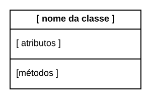
Mostra-se a seguir um diagrama com duas classes: Pessoa
e Fone.
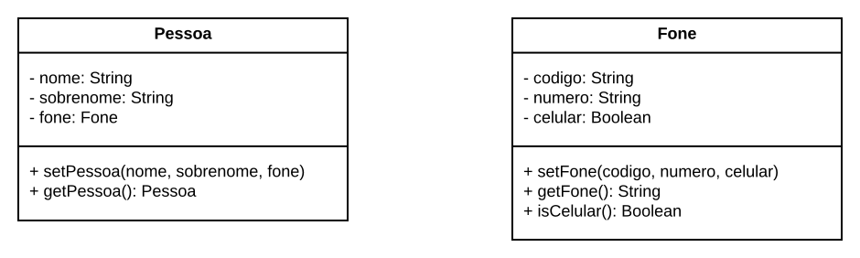
Nesse diagrama, pode-se conferir que a classe Pessoa tem
três atributos — nome, sobrenome e
fone — e dois métodos — setPessoa e
getPessoa. Os três atributos são privados, conforme
indicado pelo sinal -
antes de cada um. Informa-se também o tipo
de cada atributo. Por sua vez, os dois métodos são públicos, conforme
indicado pelo sinal +
. O diagrama possui ainda uma segunda
classe, chamada Fone, com três atributos privados —
codigo, numero e celular — e três
métodos públicos — setFone, getFone e
isCelular. No caso dos métodos, informamos também o nome de
seus parâmetros e o tipo de retorno.
Porém, se fosse somente isso, os diagramas dariam a impressão de que
as classes de um sistema são ilhas
sem comunicação entre si. No
entanto, um dos principais objetivos de diagramas de classe é mostrar
visualmente os relacionamentos que existem entre as classes de um
sistema. Por isso, eles incluem também linhas e setas, as quais são
usadas para representar três tipos de relacionamentos:
associação, herança e
dependência. Vamos tratar de cada um deles nos próximos
parágrafos.
4.3.1 Associações
Quando uma classe A possui um atributo b de um tipo B,
dizemos que existe uma associação de A para B, a qual é representada por
meio de uma seta, também de A para B. Na extremidade da seta, informa-se
o nome do atributo de A responsável pela associação — no nosso caso,
b. Veja o exemplo abaixo (nele, só mostramos as informações
que nos interessam; por isso, o compartimento de atributos e métodos
está vazio):
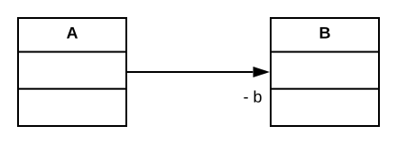
Para ficar ainda mais claro, vamos mostrar como seria o código das classes A e B:
class A {
...
private B b;
...
}
class B {
...
}Portanto, usando associações, podemos transformar o primeiro diagrama
que mostramos nesta seção, com as classes Pessoa e
Fone, no seguinte diagrama:
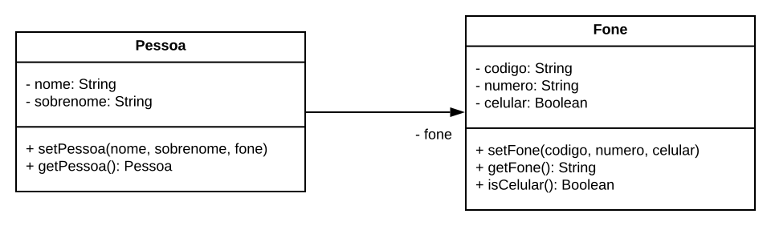
As duas versões do diagrama são semanticamente idênticas. A diferença
é que na primeira versão as classes aparecem ilhadas
. Já na
segunda versão, mostrada acima, fica visualmente claro que existe uma
associação de Pessoa para Fone. Reforçando, em
ambos diagramas, Pessoa tem um atributo fone do tipo
Fone. Porém, na primeira versão, esse atributo é mostrado
dentro do compartimento de atributos da classe Pessoa. Já
na segunda versão, ele é apresentado fora
desse compartimento.
Mais especificamente, na extremidade da seta que liga
Pessoa a Fone. O objetivo é deixar claro que o
atributo pertence a Pessoa, mas ele aponta
para um
objeto do tipo Fone.
Frequentemente, associações incluem informações de multiplicidade, que indicam quantos objetos podem estar associados ao atributo responsável pela associação. As informações de multiplicidade mais comuns são as seguintes: 1 (exatamente um objeto), 0..1 (zero ou um objeto) e * (zero ou mais objetos).
No próximo exemplo, incluímos informação sobre a multiplicidade da
associação entre Pessoa e Fone, que no caso
definimos como sendo 0..1. Essa informação consta acima do nome do
atributo responsável pela associação, no caso, fone. E ela explicita que
uma Pessoa pode ter zero ou um único telefone. Usando
termos de programação, o atributo fone de Pessoa pode ter o
valor null, isto é, a Pessoa em questão não tem
Fone associado. Ou então ela pode se associar a um único
objeto do tipo Fone.
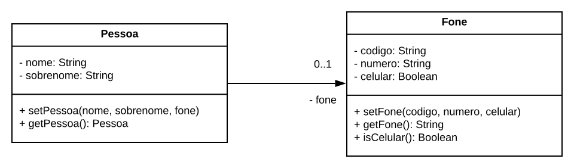
No próximo exemplo, a semântica já é diferente. Nesse caso, uma
Pessoa pode estar associada a múltiplos objetos do tipo
Fone, inclusive a nenhum. Essa multiplicidade é
representada pelo * que adicionamos logo acima da seta da
associação.
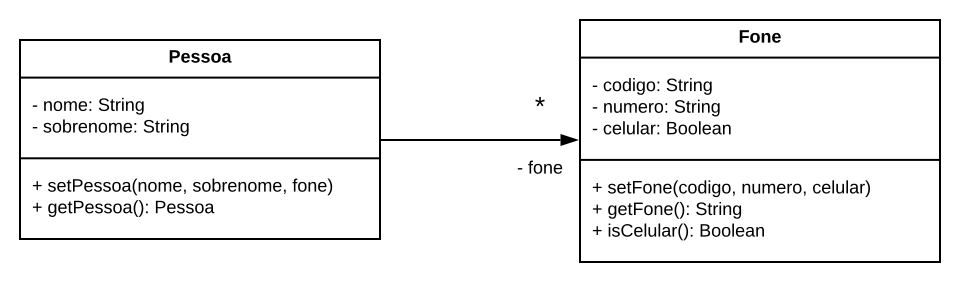
Neste segundo exemplo com informações de multiplicidade, o tipo do
atributo fone deve ser um vetor de Fone. Para
que fique claro, mostramos o código das classes a seguir:
class Pessoa {
private Fone[] fone;
...
}
class Fone {
...
}
Talvez o leitor possa se perguntar o que é mais correto: uma
Pessoa ter no máximo um Fone (isto é, 0..1) ou
uma Pessoa ter qualquer quantidade de Fone
(isto é, *)? A resposta é simples: depende dos requisitos do sistema. Ou
seja, quem deve responder a essa pergunta são os usuários do sistema que
estamos modelando. Para nós, o que importa é que diagramas de classe são
capazes de modelar qualquer um dos dois cenários.
Em alguns casos, informações de multiplicidade são também mostradas na extremidade contrária da seta, como no exemplo abaixo:
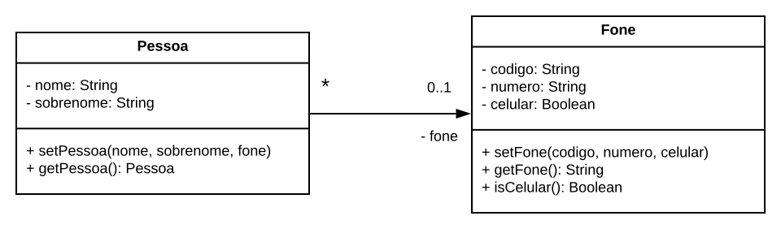
Nesse diagrama, a multiplicidade 0..1 — da extremidade com a seta —
indica que uma Pessoa pode ter zero ou um único
Fone. Mas o mais importante é explicar a multiplicidade que
foi adicionada na extremidade oposta da seta, isto é, a multiplicidade
*. Ela indica que um Fone pode estar associado a mais de
uma Pessoa. Em outras palavras, duas pessoas, distintas,
podem compartilhar o mesmo objeto do tipo Fone. No entanto,
a associação continua sendo unidirecional, isto é, Pessoa
tem um atributo fone que representa o seu Fone. Porém,
Fone não possui um atributo para armazenar as diversas
pessoas a que ele pode estar associado. Tentando ser mais claro, dada
uma Pessoa pode-se recuperar o seu Fone. Para
isso, basta acessar o atributo fone. Mas dado um Fone não é
possível saber, pelo menos via atributos, a quais objetos do tipo
Pessoa ele está associado.
Para concluir, suponha que seja importante navegar
nos dois
sentidos da associação, isto é, de Pessoa para
Fone e também de Fone para
Pessoa. A solução para essa exigência é simples: basta
tornar a associação bidirecional, isto é, adicionar uma
seta em cada extremidade da linha que conecta as classes, como mostrado
no próximo diagrama.
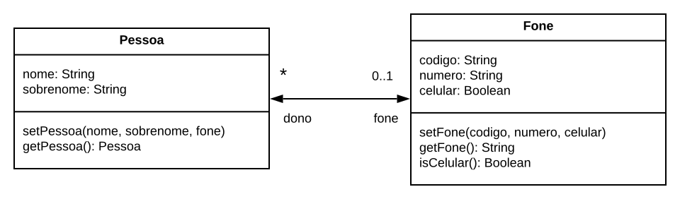
Para não deixar dúvidas sobre a semântica de uma associação bidirecional, mostramos também o código das duas classes:
class Pessoa {
...
private Fone fone;
...
}
class Fone {
...
private Pessoa[] dono;
...
}Nesse código, Pessoa possui um atributo privado
fone do tipo Fone, que pode ser null; com
isso, satisfazemos a extremidade 0..1 da associação bidirecional. Por
outro lado, Fone possui um vetor privado, de nome
dono, que referencia objetos do tipo Pessoa;
assim, satisfazemos a extremidade * da mesma associação.
No último diagrama de classes, omitimos todos os símbolos de visibilidade, tanto pública (+) como privada (-). Isso foi feito, de forma deliberada, para destacar que estamos tratando do uso de UML para criação de esboços, quando os diagramas são criados para discutir e ilustrar uma ideia de projeto. Logo, nesse contexto, não faz sentido exigir que os diagramas sejam sintaticamente perfeitos. Por isso, pequenos erros ou omissões são tolerados, principalmente quando não há prejuízo para o propósito do diagrama.
Aprofundamento: UML — dependendo da versão que está
sendo usada — admite notações diferentes para associações. Por exemplo,
algumas vezes, informa-se um nome para a associação, o qual é mostrado
logo acima e ao longo da seta que une as duas classes. Outras vezes, no
caso de associações bidirecionais, as duas setas são omitidas — pois a
padronização de UML define o seguinte: uma associação em que nenhuma
das extremidades é marcada com uma seta de navegabilidade é navegável em
ambas as direções
. No entanto, essas notações alternativas tendem a
ser confusas ou mesmo ambíguas. Por exemplo, Gonzalo Génova e mais dois
pesquisadores da Universidade de Madrid, na Espanha, fazem a seguinte
observação sobre o uso de associações bidirecionais sem setas:
infelizmente, isso pode introduzir ambiguidade na notação gráfica,
porque não conseguimos mais distinguir entre associações bidirecionais e
associações sem especificação de navegabilidade
em uma de suas
extremidades (link, Seção 3,
quarto parágrafo). Existem ainda dois conceitos frequentemente
mencionados quando estudamos associações em UML: composição e agregação.
Composição é uma relação na qual a classe de destino não pode
existir de forma independente da classe de origem. Por outro lado,
quando as duas classes têm ciclos de vida independentes, temos uma
relação de agregação. No entanto, na prática, esses conceitos também
geram confusão e, por isso, resolvemos não os incluir na explicação
sobre diagramas de classes. A mesma opinião é compartilhada por outros
autores. Por exemplo, Fowler afirma que agregação é algo estritamente
sem sentido; portanto, eu recomendo que você ignore esse conceito em
seus diagramas
(link, página
68).
4.3.2 Herança
Em diagramas de classes, relações de herança são representadas por
meio de setas com a extremidade não preenchida. Essas setas são usadas
para conectar subclasses à sua classe base. No próximo exemplo, elas
indicam que PessoaFisica e PessoaJuridica são
subclasses de Pessoa. Como usual em orientação a objetos,
subclasses herdam todos os atributos e métodos da classe base, mas
também podem adicionar novos membros. Por exemplo, apenas
PessoaFisica tem cpf e apenas
PessoaJuridica tem cnpj.
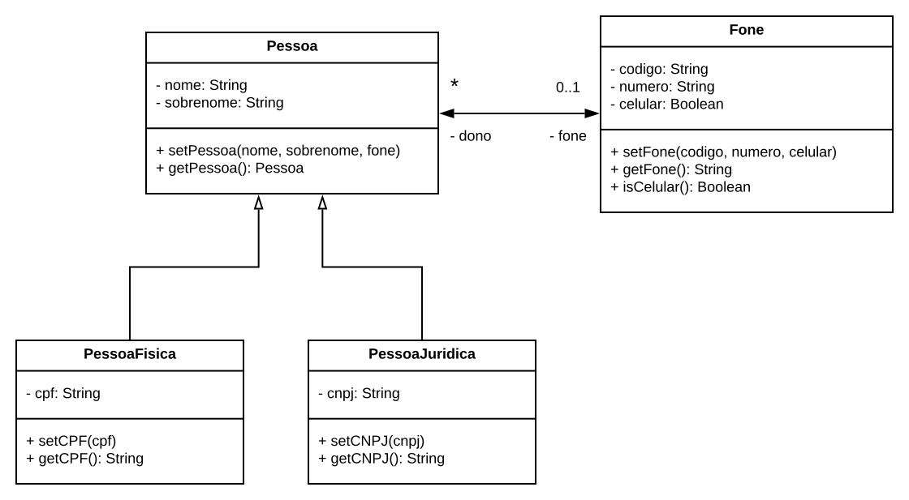
4.3.3 Dependências
Existe uma dependência de uma classe A para uma classe B, representada por uma seta com uma linha tracejada de A para B, quando a classe A usa a classe B, porém esse uso não ocorre por meio de associação (isto é, A não tem um atributo do tipo B) ou herança (isto é, A não é uma subclasse de B). Dependências ocorrem, por exemplo, quando um método de A declara um parâmetro ou variável local do tipo B ou quando um método de A lança uma exceção do tipo B. Uma dependência é considerada uma modalidade menos forte de relacionamento entre classes do que relacionamentos que ocorrem por meio de associação e herança.
Para ilustrar o uso de dependências, considere o seguinte trecho de código:
import java.util.Stack;
class MinhaClasse {
...
private void metodoX() {
Stack stack = new Stack();
...
} ...
}Observe que o metodoX de MinhaClasse possui
uma variável local do tipo java.util.Stack. Nesse caso,
dizemos que existe uma dependência de MinhaClasse para
java.util.Stack, a qual é modelada da seguinte forma:
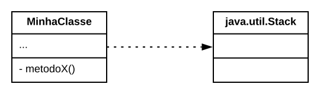
Algumas vezes, logo acima e ao longo da seta tracejada, informa-se o
tipo da dependência, usando-se palavras como create (para indicar que a
classe de origem instancia objetos da classe de destino da dependência)
ou call (para indicar que a classe de origem chama métodos da classe de
destino). Essas palavras são escritas entre sinais de menor (<<) e
maior (>>). No diagrama a seguir, por exemplo, fica claro o tipo
de dependência que ShapeFactory estabelece com a classe
Shape.
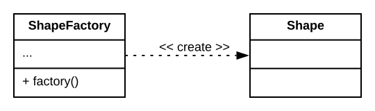
Uma classe pode ter dependências para um grande número de classes. No entanto, não se costuma representar todas elas em diagramas de classes, mas apenas as mais importantes e que estão diretamente relacionadas com a funcionalidade ou propriedade do sistema que pretendemos esboçar.
4.4 Diagrama de Pacotes
Diagramas de pacotes são recomendados quando se pretende oferecer um modelo de mais alto nível de um sistema, que mostre apenas grupos de classes — isto é, pacotes — e as dependências entre eles. Para isso, UML define um retângulo especial para representar pacotes, mostrado abaixo:
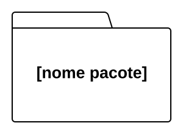
Ao contrário dos retângulos de classes, o retângulo de pacotes inclui apenas o nome do pacote (em negrito). Ele possui ainda um detalhe na parte de cima, na forma de um trapézio, para melhor diferenciá-lo dos retângulos de classe.
A figura da próxima página mostra um exemplo de diagrama de pacotes:
Nesse diagrama, podemos ver que o sistema possui quatro pacotes
principais: MobileView, WebView,
BusinessLayer e Persistence. Podemos ver ainda
as dependências — setas tracejadas — que existem entre eles. Ambos os
pacotes View usam classes de BusinessLayer.
Por outro lado, as classes de BusinessLayer também usam
classes da View, por exemplo, para notificá-las da
ocorrência de algum evento. Por isso, as setas que ligam os pacotes de
View a BusinessLayer são bidirecionais. Por
fim, apenas classes do pacote BusinessLayer usam classes do
pacote Persistence.
Para concluir, gostaríamos de acrescentar duas observações:
Dependências não incluem informações sobre quantas classes do pacote de origem dependem de classes do pacote de destino. Por exemplo, suponha dois pacotes P1 e P2, ambos com 100 classes. Suponha ainda que uma única classe de P1 use uma única classe de P2. Mesmo nesse caso, dizemos que existe uma dependência de P1 para P2.
Em diagramas de pacotes, temos um único tipo de seta, sempre tracejada, que representa qualquer tipo de relacionamento, seja ele por meio de associação, herança ou dependência simples. Essa semântica é diferente daquela que apresentamos para setas tracejadas em diagramas de classes. Nesses últimos, relações de associação e herança são representadas por meio de setas contínuas. Apenas as demais dependências são representadas por meio de setas tracejadas.
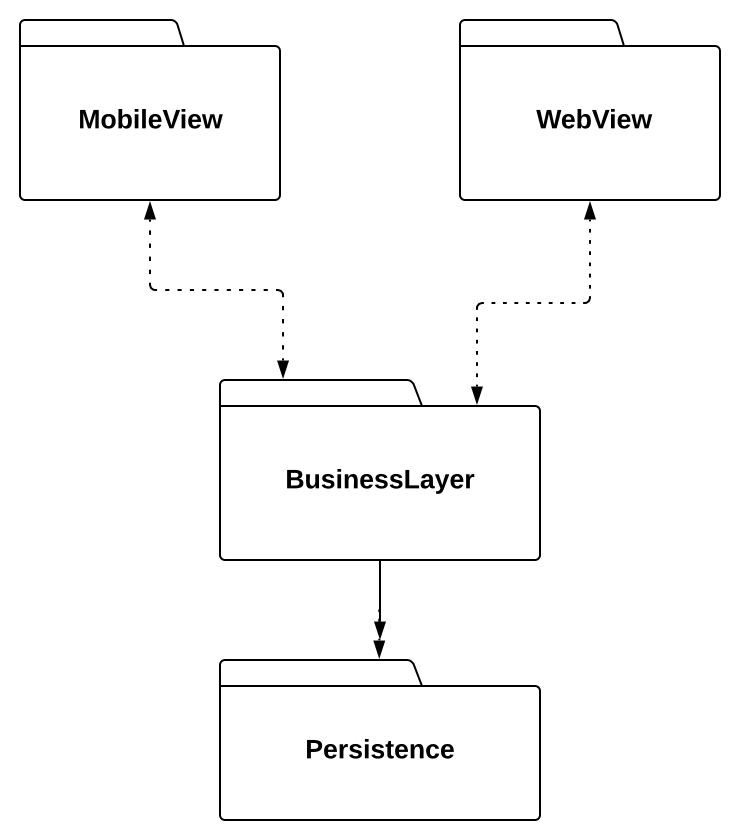
4.5 Diagrama de Sequência
Diagramas de sequência são diagramas dinâmicos, também chamados de comportamentais. Por isso, em vez de classes, eles modelam objetos de um sistema. Adicionalmente, eles incluem informações sobre quais métodos desses objetos são executados em um determinado cenário de uso de um programa. Logo, eles são usados quando se pretende explicar o comportamento de um sistema, em um determinado cenário. Por exemplo, no final desta seção, vamos apresentar um diagrama de sequência que ilustra os métodos que são chamados quando um cliente chega em um caixa eletrônico e solicita uma operação de retirada de valores.
Antes disso, para iniciar a apresentação de diagramas de sequência,
vamos usar o diagrama da próxima página. Apesar de simples, esse
diagrama serve para mostrar a dinâmica e a notação usada por diagramas
de sequência. Como já dissemos, diagramas de sequência modelam objetos,
os quais são representados por meio de retângulos, com o nome dos
objetos modelados. Esses retângulos ficam dispostos logo na primeira
linha do diagrama. Portanto, dois objetos são representados no diagrama
anterior, de nomes a1 e b1. Abaixo de cada
objeto, desenha-se uma linha vertical, a qual pode assumir duas formas:
(1) quando ela é desenhada de forma tracejada, o objeto está inativo,
isto é, nenhum de seus métodos está sendo executado; (2) quando a linha
fica cheia, ganhando um formato retangular, um dos métodos do objeto foi
chamado e encontra-se em execução. Quando essa execução termina, a linha
volta a ficar tracejada. Além disso, o início da chamada é indicado por
uma seta na horizontal, com o nome do método chamado. O retorno da
chamada é indicado por uma seta tracejada, com o nome do objeto
retornado. No entanto, às vezes a seta de retorno é omitida, como no
caso da chamada do método g. Existem dois motivos para essa
omissão: (1) o tipo de retorno é void; ou (2) o objeto de
retorno não é relevante, a ponto de merecer ser representado no
diagrama.
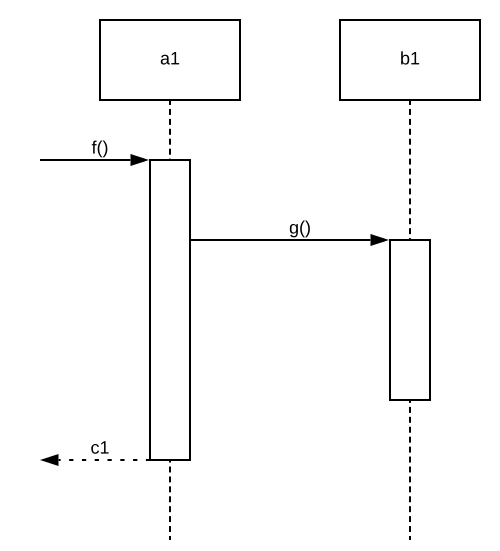
No diagrama de sequência mostrado acima representamos apenas dois
objetos (a1 e b1). Mas um diagrama de
sequência pode ter mais objetos. No entanto, esse número não pode
crescer tanto, pois o diagrama acaba ficando complexo e de difícil
entendimento. Por exemplo, pode não ser possível representá-lo em uma
única folha de papel ou em uma tela de computador.
Um objeto pode ficar ativo e inativo diversas vezes em um mesmo diagrama. Ou seja, ele pode executar um método; ficar inativo; executar um novo método; ficar inativo, etc. Existe ainda um caso especial, quando um objeto chama um método dele mesmo, isto é, quando ele chama um método usando this. Para ilustrar esse caso, suponha o seguinte programa.
class A {
void g() {
...
}
void f() {
...
g();
...
}
main() {
A a = new A();
a.f();
}
}A execução desse programa é representada pelo diagrama de sequência a
seguir. Observe como a chamada de g() feita por
f() é representada por meio de um novo retângulo, que
sai
do retângulo que representa a ativação da função
f().
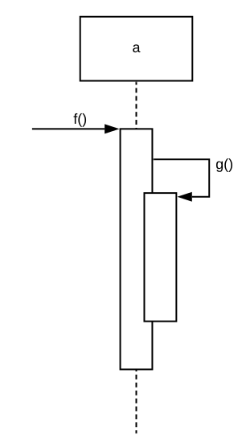
Para concluir, o próximo diagrama mostra um cenário mais real, que ilustra os métodos chamados quando o cliente de uma caixa eletrônico solicita um depósito de certo valor em sua conta.
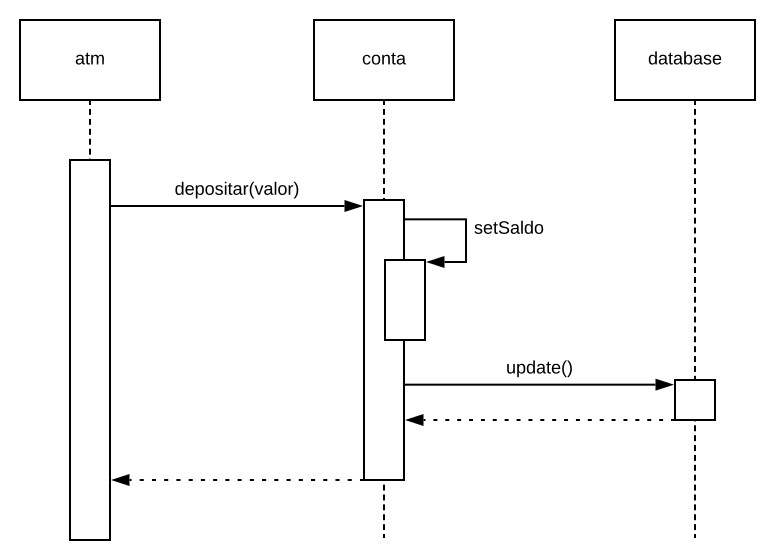
4.6 Diagrama de Atividades
Diagramas de atividades são usados para representar, em alto nível, um processo ou fluxo de execução. Os principais elementos desses diagramas são ações representadas por retângulos. Existem ainda elementos de controle, que definem a ordem de execução das ações. A figura da próxima página mostra um diagrama de atividades que modela o processo seguido após um usuário fechar uma compra em uma loja virtual. Para isso, assume-se que os produtos comprados já estão no carrinho de compra. Para entender o funcionamento de um diagrama de atividades (como aquele mostrado na figura), devemos assumir que existe uma ficha (token) imaginária que caminha pelos nodos do diagrama. A seguir, explicamos o comportamento de cada nodo de um diagrama de atividades, assumindo a existência dessa ficha.
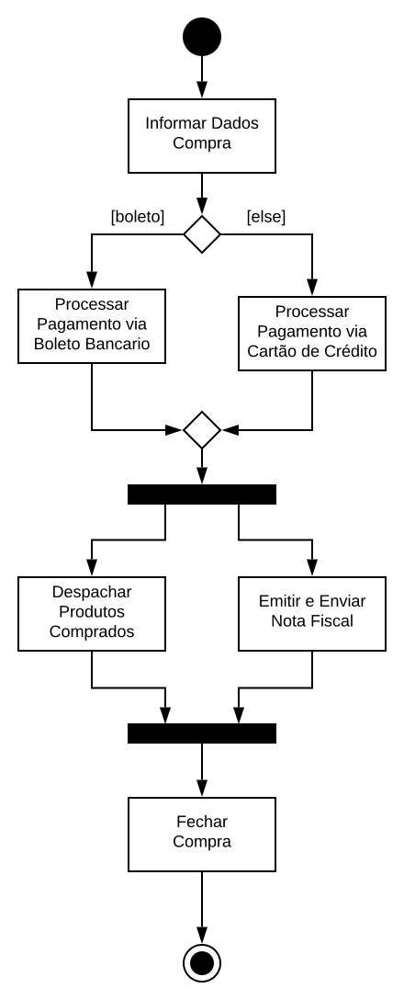
Nodo Inicial: Cria uma ficha para dar início à execução do processo. Feito isso, repassa a ficha para seu único fluxo de saída. Por definição, o nodo inicial não possui fluxo de entrada.
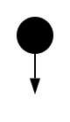
Ações: Possuem um único fluxo de entrada e um único fluxo de saída. Para uma ação ser executada uma ficha precisa chegar no seu fluxo de entrada. Após a execução, repassa-se a ficha para o fluxo de saída.
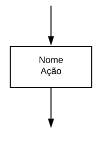
Decisões: Possuem um único fluxo de entrada e dois ou mais fluxos de saída. Cada fluxo de saída possui uma variável booleana associada, chamada de guarda. Para se tomar uma decisão, precisa-se receber uma ficha no fluxo de entrada. Quando isso acontece, a ficha é repassada apenas para o fluxo de saída cuja condição é verdadeira.
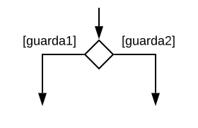
Merges: Podem possuir vários fluxos de entrada, mas um único fluxo de saída. Quando uma ficha chega em um dos fluxos de entrada, fazem seu repasse para o fluxo de saída. São usados para unir os fluxos de nodos de decisão.
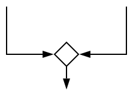
Forks: Possuem um único fluxo de entrada e um ou mais fluxos de saída. Atuam como multiplicadores de ficha: quando recebem uma ficha no fluxo de entrada, criam e repassam fichas idênticas em cada fluxo de saída. Como resultado, passam a existir múltiplos processos em execução de forma paralela.

Joins: Possuem vários fluxos de entrada, mas um único fluxo de saída. Atuam como sorvedouros de fichas: esperam que fichas cheguem em todos os fluxos de entrada. Quando isso acontece, repassam uma única ficha para o fluxo de saída. Logo, são usados para sincronizar processos. Em outras palavras, transformar vários fluxos de execução em um único fluxo.
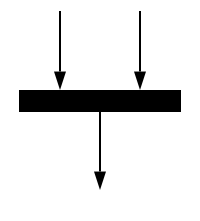
Nodo Final: Pode possuir mais de um fluxo de entrada; mas não possui fluxos de saída. Quando uma ficha chega em um dos fluxos de entrada, encerra-se a execução do diagrama de atividades.
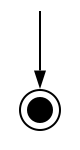
Aprofundamento: Existem pelo menos três outras alternativas para modelagem de fluxos e processos:
Fluxogramas, os quais foram propostos tão logo se começou a desenvolver os primeiros programas para computadores modernos. Diagramas de atividades são parecidos com fluxogramas; porém, eles incluem suporte a concorrência, por meio de forks e joins. Por outro lado, fluxogramas modelam processos sequenciais.
Redes de Petri é uma notação gráfica, proposta pelo matemático alemão Carl Adam Petri, em 1962, para modelagem de sistemas concorrentes. Redes de Petri possuem uma representação gráfica e também usam fichas (tokens) para marcar o estado corrente do sistema. Elas têm ainda a vantagem de possuir uma definição mais formal, principalmente quando comparada com a definição de diagramas de atividades. Por outro lado, esses últimos tendem a oferecer uma notação mais simples e fácil de entender.
BPMN (Business Process Model and Notation) é um esforço mais recente, que teve início nos anos 2000, visando a proposição de uma notação gráfica mais amigável para modelagem de processos de negócio do que aquela oferecida por diagramas de atividades. Um dos objetivos é propiciar que analistas de negócio possam ler, interpretar e validar diagramas BPMN.
Bibliografia
Martin Fowler. UML Distilled: A Brief Guide to the Standard Object Modeling Language. Addison-Wesley, 2003.
Grady Booch, James Rumbaugh, Ivar Jacobson. The Unified Modeling Language User Guide. Addison-Wesley, 2005.
Craig Larman. Applying UML and Patterns: An Introduction to Object-Oriented Analysis and Design and Iterative Development. Prentice-Hall, 2004.
Exercícios de Fixação
1. Explique e discuta os três usos possíveis de UML:
- Como blueprint (ou plantas técnicas detalhadas)
- Como sketches (esboços)
- Como linguagem de programação.
2. Descreva cenários de uso de diagramas de classes UML como instrumento dos seguintes tipos de engenharia:
- Engenharia Reversa
- Engenharia Avante (Forward Engineering).
3. Modele os cenários descritos a seguir usando Diagramas de Classe UML. Veja que as classes são grafadas em uma fonte diferente.
ContaBancariapossui exatamente umCliente. UmCliente, por sua vez, pode ter váriasContaBancaria. Existe navegabilidade em ambos os sentidos.ContaPoupancaeContaSalariosão subclasses deContaBancaria.No código de
ContaBancariadeclara-se uma variável local do tipoBancoDados.Um
ItemPedidose refere a um únicoProduto(sem navegabilidade). UmProdutopode ter váriosItemPedido(com navegabilidade).A classe
Alunopossui atributosnome,matricula,curso(todos privados); e métodosgetCurso()ecancelaMatricula(), ambos públicos.
4. (ENADE 2014, Tec. e Análise de Sistemas) Construa um diagrama de classes para representar as seguintes classes e associações:
Uma revista científica possui título, ISSN e periodicidade;
Essa revista publica diversas edições com os seguintes atributos: número da edição, volume da edição e data da edição. Importante destacar que cada instância da classe edição relaciona-se única e exclusivamente a uma instância da classe revista científica, não podendo relacionar-se com nenhuma outra;
Um artigo possui título e nome do autor. Um artigo é um conteúdo exclusivo de uma edição. E uma edição obrigatoriamente tem que possuir no mínimo 10 e no máximo 15 artigos.
5. Crie diagramas de classes para os seguintes trechos de código:
(a)
public class HelloWorldSwing {
public static void main(String[] args) {
JFrame frame = new JFrame("Hello world!");
frame.setVisible(true);
}
}(b)
class HelloWorldSwing extends JFrame {
public HelloWorldSwing() {
super("Hello world!");
}
public static void main(String[] args) {
HelloWorldSwing frame = new HelloWorldSwing();
frame.setVisible(true);
}
}6. Mostre o diagrama de sequência relativo ao seguinte código. O diagrama deve começar com a seguinte chamada a.m5().
A a = new A(); // variáveis globais
B b = new B();
C c = new C();
class C {
void m1() { ... }
}
class B {
void m2() { ... c.m1(); ... this.m3(); ... }
void m3() { ... c.m1(); ... }
void m4() { ... }
}
class A {
void m5() { ... b.m2(); ... b.m3(); ... b.m4(); ... }
} 7. Em diagramas de atividades, explique a diferença entre um nodo de merge e um nodo de join.
8. Qual é o erro do seguinte diagrama de atividades? Refaça o diagrama de forma a refletir corretamente a intenção do projetista.
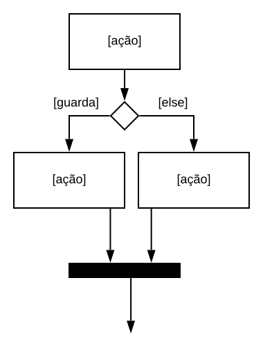